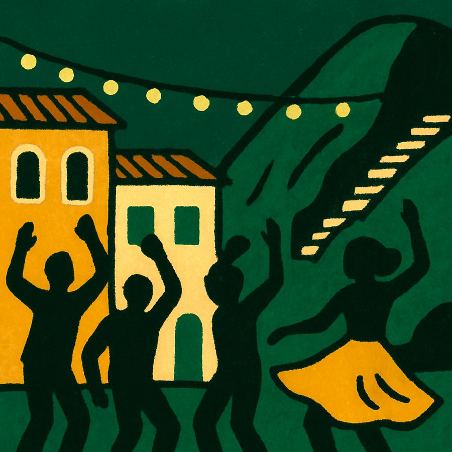

Samba, bossa nova e as esquinas do Rio
Samba Family é um projeto musical do selo TuneTu.music: samba, bossa nova e música urbana brasileira, contada em pequenas histórias de bairro, praia e madrugada.
Samba Family is a music project by the label TuneTu.music: samba, bossa nova and urban Brazilian music, told through small stories of neighbourhoods, beaches and late nights.

Ouça / Listen
About the “Samba Family Automat” app
“Samba Family Automat” is an internal tool used only by TuneTu.music. It publishes Samba Family's own short music videos (YouTube Shorts) to Samba Family's own YouTube channel on a fixed schedule.
To do this it uses the YouTube Data API with access to that one channel: it uploads the videos and sets their title, description, tags and publishing time, and it reads basic statistics of these videos. It is not offered to the public, no other people sign in to it, and it does not access anyone else's data.
Details are in the privacy policy.